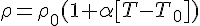
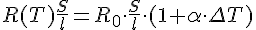
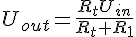

Схема дифферинцирования
ИП на основе терморезистивного эффекта
Можно классифицировать как
Генераторные ИП - преобразователи физических величин, которые под действием измеряемой физ. величины формируют измерительную информацию в виде другой физ. величины при одном энергетическом входе и одном энергетическом выходе
Параметрические ИП - имеют 2 и более эннергетических входов при одном энергетическом выходе
В параметрических ИП измеряемая величина меняет параметр преобразователя при малых затратах энергии, а формирование выходного сигнала ИП обеспечивается энергией внешнего источника питания, не создавая нагрузки на объект измерения
Не смотря на отнносительную сложность, параметрические ИП обладают меньшей погрешностью и более высокой помехоустойчивостью
Терморезистивный эффект - изменение удельного сопротивления проводниковых, полупроводниковых и диэлектрических материалов под действием температуры
Изменение температуры эл. проводника относительно его удельного сопротивления можно выразить по линейному з-ну

- уд. сопротивление при начальной температуре
- температурный коэффициент
Далее определим зависимость эл. сопротивления от температуры исходя из общего уравнения удельного сопротивления однородного проводника

Полученные выражения можно использовать в очень малом диапазоне температур т.к. вместе с температурой меняются величины и
Для увеличения точности функции преобразования тщательно исследуются и были получены общие экспериментальные выражения для получения более точных ф-ций преобразований
В области температур от до  ф-ция имеет вид
ф-ция имеет вид
А от до ф-цию преобразования можно записать в виде
- постоянные коэффициенты, определяются экспериментально
Представим ф-цию преобразования температуры в сопротивление в более простом виде
Например, номинальная статическая хар-ка Pt100
для -200 - 0
а для 0 - +850
Где A, B, C - константы
Схемы включения параметрических ИП
Чтобы получить сигнал с терморезистивного преобразователя необходимо пропустить через него ток от источника эл. напряжения
Тогда на термометре возникнет падение напряжения согласно з-ну Ома
Как правило источники питания имеют малое внутреннее сопротивление и изменение сопротивления нагрузки не влияет на величину падения напряжения на нем
Чтобы значимо менялось значение сопротивления на терморезисторе последовательно с ним необходимо включить дополнительное сопротивление. Данная схема называется потенциометрическая

Полученное выражение может рассматриваться как ф-ция преобразования нового ИП, включающего в себя терморезистор как основную часть. Основной недостаток - наличие нулевого выходного напряжения
У полупроводникового терморезистора ф-ция преобразования при первом приближении имеет вид
Где и - температуры в кельвинах